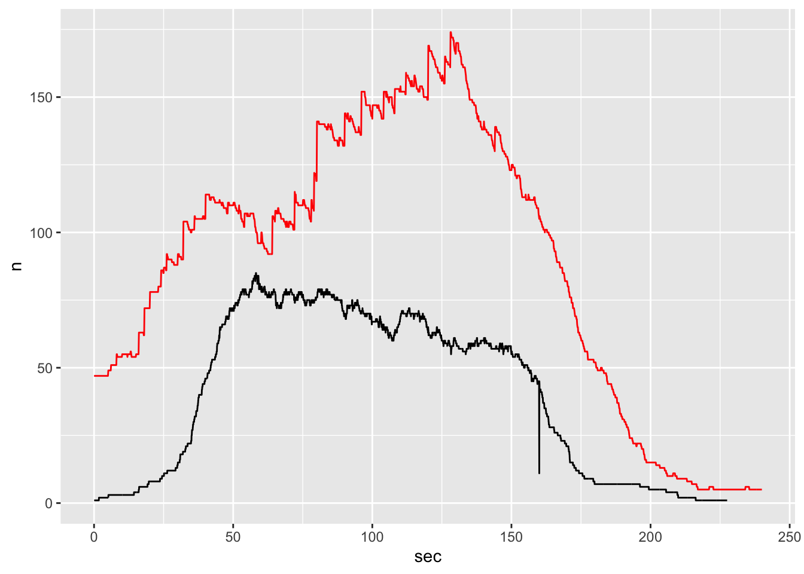
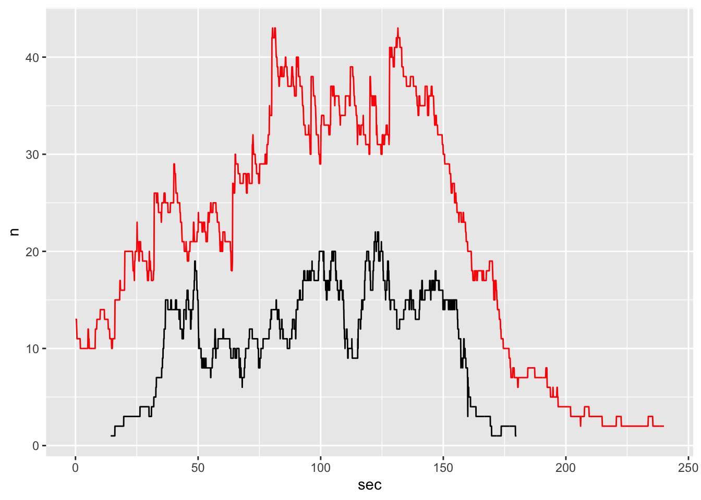
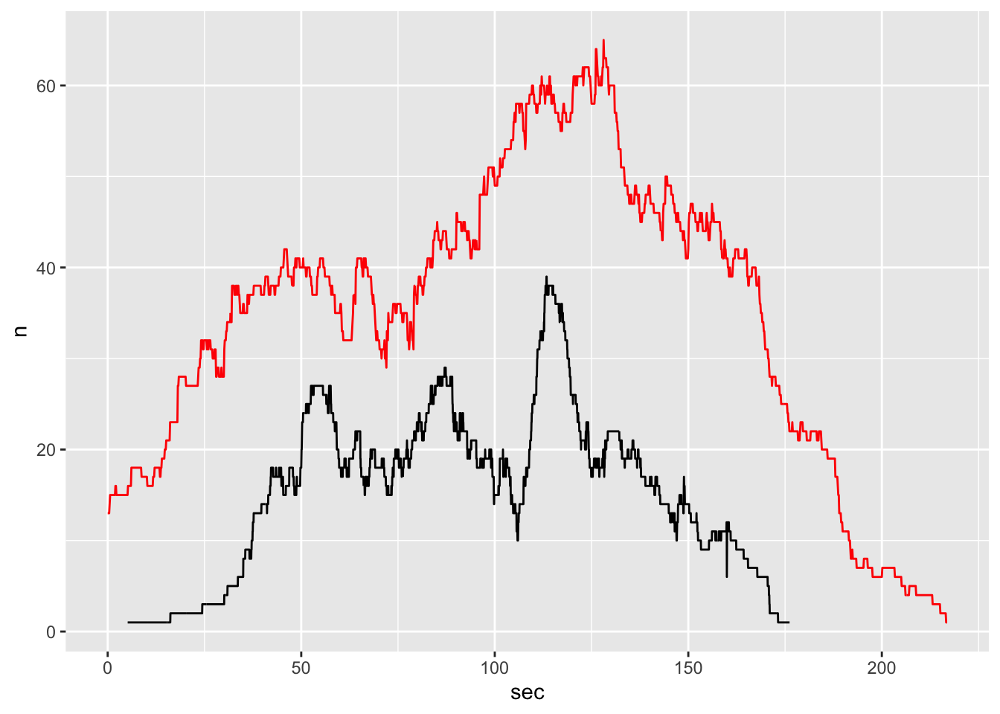
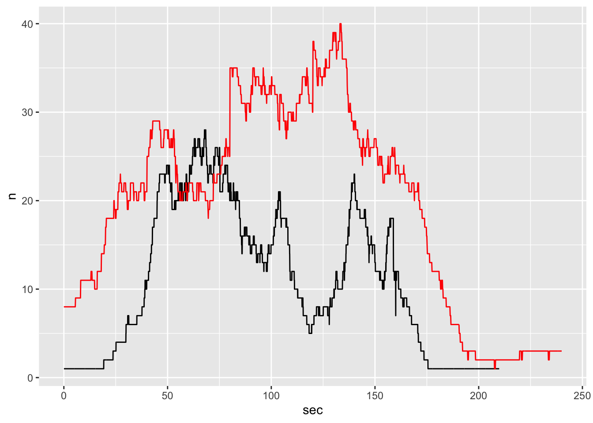
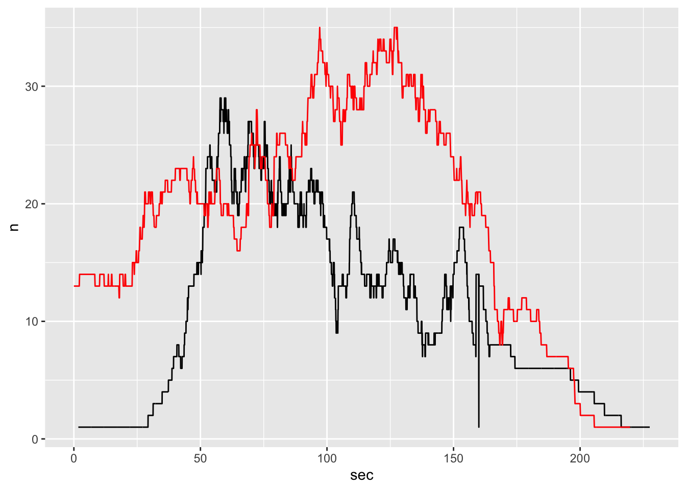
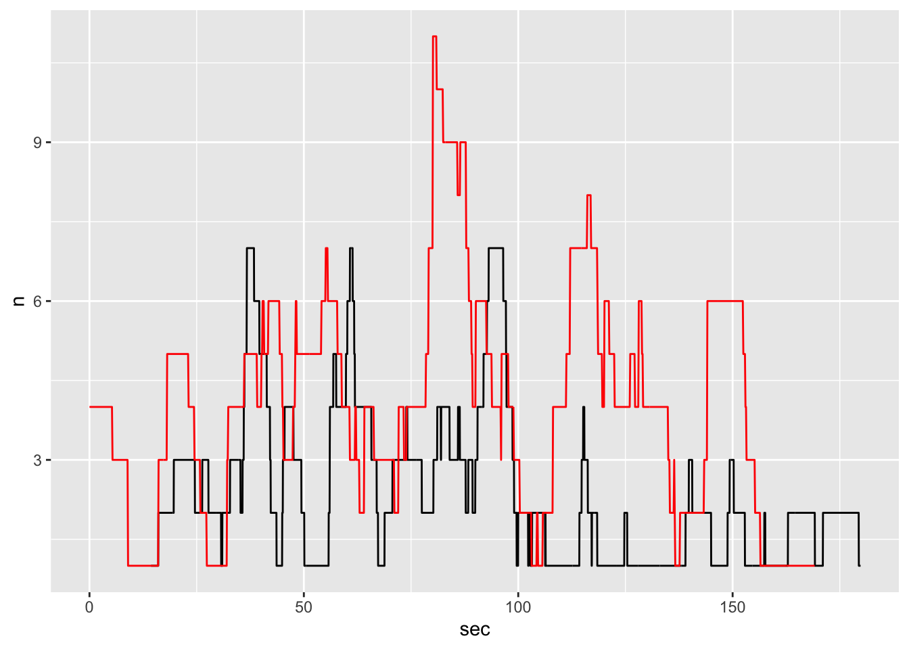
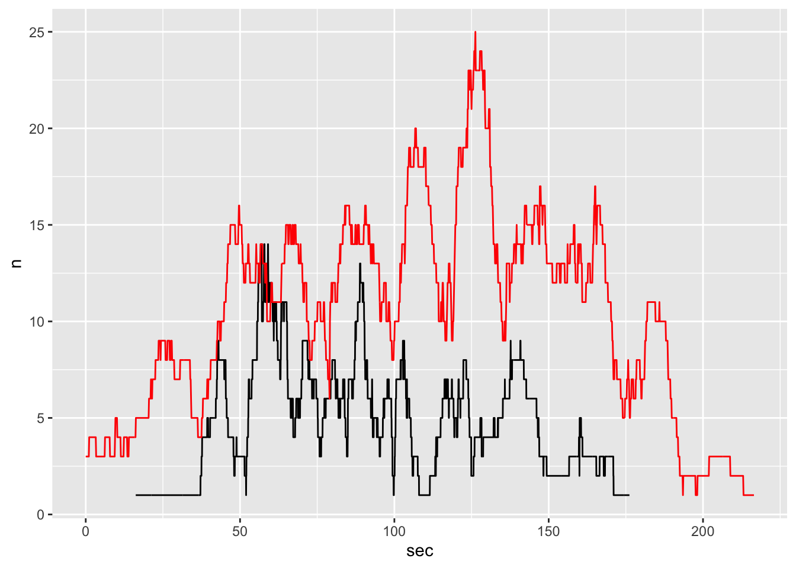

# now let's create a new column for seconds
# 1 second = 25 frames
gcs_sf_s = gcs_sf |>
dplyr::mutate(sec = as.numeric(frame) / 25)
# group df by seconds
gcs_grouped = gcs_sf_s |>
sf::st_drop_geometry() |> #drop geometry as it's not needed here
dplyr::group_by(sec) |> # group by seconds
dplyr::summarise(n = dplyr::n()) # summarise
gcs_grouped |>
head()3 Flow
3.1 1.1 Global flow (GCS)
3.1.1 Plotting
gcs_flow_plot = ggplot2::ggplot(gcs_grouped) +
ggplot2::aes(x = sec,
y = n) +
ggplot2::geom_line()We could add add additional information by adding lines indicating mean and median for seconds and number of agents, but I’m not sure it tells us much…
# let's calculate mean and median values of n to add to the plot
gcs_mean_s = gcs_sf_s$sec |> mean()
gcs_median_s = gcs_sf_s$sec |> median()
gcs_mean_n = gcs_grouped$n |> mean()
gcs_median_n = gcs_grouped$n |> median()
ggplot2::ggplot(gcs_grouped) +
ggplot2::aes(x = sec,
y = n) +
ggplot2::geom_line() +
ggplot2::geom_vline(xintercept = gcs_mean_s,
col = "red") +
ggplot2::geom_text(ggplot2::aes(x=gcs_mean_s+5, label=paste0("Mean\n",round(gcs_mean_s,2)), y=80)) +
ggplot2::geom_vline(xintercept = gcs_median_s,
col = "blue") +
ggplot2::geom_hline(yintercept = gcs_mean_n,
col = "red") +
ggplot2::geom_hline(yintercept = gcs_median_n,
col = "blue")3.2 2.1 Divided flow (GCS)
# first create a list to store our multiple dataframes
gcs_joined = list()
for (i in 1:lengths(gcs_div_sf)){
gcs_joined[[i]] = gcs_sf_s[gcs_div_sf[i,], op = sf::st_intersects] # all intersecting points will be selected
}
# sanity check
gcs_joined1 = gcs_sf_s[gcs_div_sf[1,], op = sf::st_intersects]
gcs_joined2 = gcs_sf_s[gcs_div_sf[2,], op = sf::st_intersects]
identical(gcs_joined1, gcs_joined[[1]]) # TRUE
identical(gcs_joined2, gcs_joined[[2]]) # TRUE# group each sf object by seconds and make a list out of them
gcs_joined_grouped = list()
for (i in 1:length(gcs_joined)){
gcs_joined_grouped[[i]] = gcs_joined[[i]] |>
sf::st_drop_geometry() |>
dplyr::group_by(sec) |>
dplyr::summarise(n = dplyr::n())
}
# sanity check comparison (alert: ugly code!)
identical(gcs_joined_grouped[[1]], # first list of a list that was just made
gcs_joined[[1]] |> # repeating the same code as in the loop above but only on 1 (the first) list
sf::st_drop_geometry() |>
dplyr::group_by(sec) |>
dplyr::summarise(n = dplyr::n()))3.2.1 Plotting
In the plot showing flow in the entire GCS environment, I added means and medians but this time I will exclude them as I do not know if it’s valuable to have them at this stage. Plus, it will make the code shorter.
# let's create a list of plots showing flow in each polygon
gcs_flow_div_plots = list()
for (i in 1:length(gcs_joined_grouped)){
gcs_flow_div_plots[[i]] = ggplot2::ggplot(gcs_joined_grouped[[i]]) +
ggplot2::aes(x = sec,
y = n) +
ggplot2::geom_line()
# print(gcs_flow_div_plots)
}# let's plot a polygons 1-4
gridExtra::grid.arrange(gcs_flow_div_plots[[1]], gcs_flow_div_plots[[2]],gcs_flow_div_plots[[3]],gcs_flow_div_plots[[4]], layout_matrix = rbind(c(1,2),c(3,4)))3.3 3.1 Selected (GCS)
# a list to store our 2 dataframes for the selected areas
gcs_joined_zones = list()
for (i in 1:length(zones)){
gcs_joined_zones[[i]] = gcs_sf_s[zones[[i]], op = sf::st_intersects] # all intersecting points will be selected
}
# sanity check
gcs_joined_zones1 = gcs_sf_s[zones[[1]], op = sf::st_intersects]
identical(gcs_joined_zones1, gcs_joined_zones[[1]]) # TRUE# group each sf object by seconds and make a list out of them
gcs_joined_grouped_zones = list()
for (i in 1:length(gcs_joined_zones)){
gcs_joined_grouped_zones[[i]] = gcs_joined_zones[[i]] |>
sf::st_drop_geometry() |>
dplyr::group_by(sec) |>
dplyr::summarise(n = dplyr::n())
}
# sanity check comparison (alert: ugly code!)
identical(gcs_joined_grouped_zones[[1]], # first list of a list that was just made
gcs_joined_zones[[1]] |> # repeating the same code as in the loop above but only on 1 (the first) list
sf::st_drop_geometry() |>
dplyr::group_by(sec) |>
dplyr::summarise(n = dplyr::n()))3.3.1 Plotting
# let's create a list of plots showing flow in each polygon
gcs_flow_zones_plots = list()
for (i in 1:length(gcs_joined_grouped_zones)){
gcs_flow_zones_plots[[i]] = ggplot2::ggplot(gcs_joined_grouped_zones[[i]]) +
ggplot2::aes(x = sec,
y = n) +
ggplot2::geom_line()
# print(gcs_flow_zones_plots )
}
gridExtra::grid.arrange(gcs_flow_zones_plots[[1]], gcs_flow_zones_plots[[2]], layout_matrix = rbind(c(1,2),c(3,4)))3.4 1.2 Global (JPS)
# now let's create a new column for seconds
# 1 second = 25 frames
jps_s = traj1_sf |>
dplyr::mutate(sec = FR / 25)
# group df by seconds
jps_grouped = jps_s |>
sf::st_drop_geometry() |> #drop geometry as it's not needed here
dplyr::group_by(sec) |> # group by seconds
dplyr::summarise(n = dplyr::n()) # summarise
jps_grouped |>
head()3.4.1 Plotting
jps_flow_plot = ggplot2::ggplot(jps_grouped) +
ggplot2::aes(x = sec,
y = n) +
ggplot2::geom_line()
jps_flow_plot 3.5 2.2 Divided flow (JPS)
# first create a list to store our multiple dataframes
jps_joined = list()
for (i in 1:lengths(gcs_div_sf)){
jps_joined[[i]] = jps_s[gcs_div_sf[i,], op = sf::st_intersects] # all intersecting points will be selected
}
# sanity check
jps_joined1 = jps_s[gcs_div_sf[1,], op = sf::st_intersects]
identical(jps_joined1, jps_joined[[1]]) # TRUE# group each sf object by seconds and make a list out of them
jps_joined_grouped = list()
for (i in 1:length(jps_joined)){
jps_joined_grouped[[i]] = jps_joined[[i]] |>
sf::st_drop_geometry() |>
dplyr::group_by(sec) |>
dplyr::summarise(n = dplyr::n())
}
# sanity check comparison (alert: ugly code!)
identical(jps_joined_grouped[[1]], # first list of a list that was just made
jps_joined[[1]] |> # repeating the same code as in the loop above but only on 1 (the first) list
sf::st_drop_geometry() |>
dplyr::group_by(sec) |>
dplyr::summarise(n = dplyr::n()))3.5.1 Plotting
# let's create a list of plots showing flow in each polygon
jps_flow_div_plots = list()
for (i in 1:length(jps_joined_grouped)){
jps_flow_div_plots[[i]] = ggplot2::ggplot(jps_joined_grouped[[i]]) +
ggplot2::aes(x = sec,
y = n) +
ggplot2::geom_line()
# print(gcs_flow_div_plots)
}# let's plot polygons 1-4
gridExtra::grid.arrange(jps_flow_div_plots[[1]], jps_flow_div_plots[[2]],jps_flow_div_plots[[3]],jps_flow_div_plots[[4]], layout_matrix = rbind(c(1,2),c(3,4)))3.6 3.2 Selected (JPS)
# a list to store our 2 dataframes for the selected areas
jps_joined_zones = list()
for (i in 1:length(zones)){
jps_joined_zones[[i]] = jps_s[zones[[i]], op = sf::st_intersects] # all intersecting points will be selected
}
# sanity check
jps_joined_zones1 = jps_s[zones[[1]], op = sf::st_intersects]
identical(jps_joined_zones1, jps_joined_zones[[1]]) # TRUE# group each sf object by seconds and make a list out of them
jps_joined_grouped_zones = list()
for (i in 1:length(jps_joined_zones)){
jps_joined_grouped_zones[[i]] = jps_joined_zones[[i]] |>
sf::st_drop_geometry() |>
dplyr::group_by(sec) |>
dplyr::summarise(n = dplyr::n())
}
# sanity check comparison (alert: ugly code!)
identical(jps_joined_grouped_zones[[1]], # first list of a list that was just made
jps_joined_zones[[1]] |> # repeating the same code as in the loop above but only on 1 (the first) list
sf::st_drop_geometry() |>
dplyr::group_by(sec) |>
dplyr::summarise(n = dplyr::n()))3.6.1 Plotting
# let's create a list of plots showing flow in each polygon
jps_flow_zones_plots = list()
for (i in 1:length(jps_joined_grouped_zones)){
jps_flow_zones_plots[[i]] = ggplot2::ggplot(jps_joined_grouped_zones[[i]]) +
ggplot2::aes(x = sec,
y = n) +
ggplot2::geom_line()
# print(gcs_flow_zones_plots )
}
gridExtra::grid.arrange(jps_flow_zones_plots[[1]], jps_flow_zones_plots[[2]], layout_matrix = rbind(c(1,2),c(3,4)))3.7 Comparison
In this subsection we will overlay GCS and JPS plots to compare flows.
3.7.1 Global
flow_comp = gcs_flow_plot
ggplot2::geom_line(data = jps_grouped,
color = "red")
3.7.2 Divided
flow_div_comp = list()
for (i in 1:length(gcs_flow_div_plots)) {
flow_div_comp[[i]] = gcs_flow_div_plots[[i]] +
ggplot2::geom_line(data = jps_joined_grouped[[i]],
color = "red")
}
gridExtra::grid.arrange(flow_div_comp[[1]], flow_div_comp[[2]],flow_div_comp[[3]],flow_div_comp[[4]], layout_matrix = rbind(c(1,2),c(3,4)))[[1]]
[[2]]
[[3]]
[[4]]
3.7.3 Selected
flow_sel_comp = list()
for (i in 1:length(gcs_flow_zones_plots)) {
flow_sel_comp[[i]] = gcs_flow_zones_plots[[i]] +
ggplot2::geom_line(data = jps_joined_grouped_zones[[i]],
color = "red")
}
gridExtra::grid.arrange(flow_sel_comp[[1]], flow_sel_comp[[2]], layout_matrix = rbind(c(1,2)))[[1]]
[[2]]